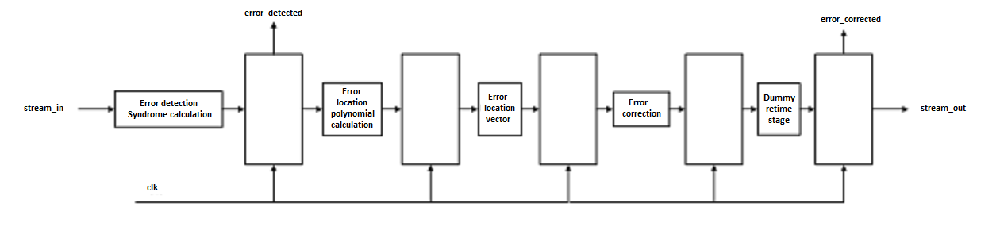

| Версия | 1.0 |
| Дата | 2016.02.15 |
| Разработчик | А.В. Корнюхин (kornukhin@mail.ru) |
В данной спецификации описываются структура, порядок использования и технические характеристики блока декодера Рида-Соломона.
| Номер | Наименование |
|---|---|
| 1 | Reed-Solomon Codes by Bernard Sklar |
| 2 | https://ru.wikipedia.org/wiki/%D0%9A%D0%BE%D0%B4_%D0%A0%D0%B8%D0%B4%D0%B0_%E2%80%94_%D0%A1%D0%BE%D0%BB%D0%BE%D0%BC%D0%BE%D0%BD%D0%B0 |
| 3 | Lin Shu, Costello Daniel J., Error Control coding |
| Сокращение | Расшифровка |
|---|---|
| RS | Reed-Solomon |
ehl_rs_dec представляет собой декодер данных по алгоритму Рида-Соломона. Блок имеет набор параметров, позволяющих настроить его под требования проекта.
ehl_rs_dec может быть использован как полностью комбинаторный модуль или как datapath модуль, на вход которого поступают данные и контрольные биты для декодирования, а на выходе появляются исправленные данные и флаги наличия ошибок и их исправляемости.
____________________________
| |
---| stream_in stream_out |---
---| clk error_detected |---
---| res error_corrected |---
|____________________________|
| Название | Количество | Тип | Назначение |
|---|---|---|---|
| stream_in | N | I | Входная шина данных. |
| stream_out | M | O | Выходная шина данных. |
| error_detected | 1 | O | Флаг обнаружения ошибки. |
| error_corrected | 1 | O | Флаг исправления ошибки. |
| clk | 1 | I | Тактовый сигнал. |
| res | 1 | I | Асинхронный сброс (активный уровень b’0). |
Значение N определяется параметрами DATA_SYMBOL, SYMBOL_WIDTH и ERROR_FIXED.
Значение M определяется параметрами DATA_SYMBOL и SYMBOL_WIDTH.
Модуль является конвейеризованным декодером с опционально включаемыми стадиями:
1. Поиск синдрома ошибки. Если ошибка обнаружена, устанавливается флаг error_detected.
2. Вычисление полинома ошибок.
3. Вычисление вектора локализации ошибки.
4. Коррекция ошибок.
5. Дополнительная стадия, используемая для ретайминга. На выходе stream_out скорректированные данные, если установлен флаг error_corrected, в противном случае, ошибок не было, либо не удалось исправить (в зависимости от значения error_detected на 1 стадии).
ehl_rs_dec может быть настроен под задачу пользователя. За настройку отвечают параметры, представленные в таблице.
| Название | Значение по умолчанию | Допустимые значения | Описание |
|---|---|---|---|
| SYMBOL_WIDTH | 4 | 3-12 | Количество бит в символе данных. |
| DATA_SYMBOLS | 11 | 2-255 | Количество символов во входных данных. |
| ERROR_FIXED | 2 | 1-7 | Количество исправляемых ошибок. |
| PIPELINE | 0 | 0, 1 | Тип конвейера. |
| EXTRA_STAGE | 0 | 0, 1 | Дополнительная стадия конвейера на выходе. |
Параметр PIPELINE определяет тип логики в модуле (0 – полностью комбинаторная схема, 1 – конвейер с триггерами между стадиями). Для небольших значений параметров SYMBOL_WIDTH, DATA_SYMBOLS, ERROR_FIXED при соответствующем выборе технологии вычисления могут выполняться за 1 такт. Если это требование не выполняется, то рекомендуется использовать конвейер.
Параметр EXTRA_STAGE позволяет добавить дополнительный регистр на выходе декодера. Если параметр равен 0, то stream_out и error_detected формируются на такт раньше, до “Dummy retime stage” (рис. 1).
Для параметров должно выполняться следующее соотношение:
DATA_SYMBOLS + 2*ERROR_FIXED > 2**SYMBOL_WIDTH – 1 [3, Раздел 7.3].
Ширина входных данных определяется соотношением (DATA_SYMBOLS + 2*ERROR_FIXED) * SYMBOL_WIDTH.
Ширина выходных данных определяется соотношением DATA_SYMBOLS * SYMBOL_WIDTH.
Код Рида-Соломона является недвоичным кодом, т.е. он работает с символами, а не с битами. Символ состоит из 3 и более бит (“Reed-Solomon codes are nonbinary cyclic codes with symbols made up of m-bit sequences, where m is any positive integer having a value greater than 2.” [1]). Поэтому исправление ошибок происходит на уровне символов, независимо от того, сколько бит в символе было повреждено.
Исходными данными для генерации кода является примитивный полином.
| SYMBOL_WIDTH | Примитивный полином |
|---|---|
| 3 | x3+x1+1 |
| 4 | x4+x1+1 |
| 5 | x5+x2+1 |
| 6 | x6+x1+1 |
| 7 | x7+x3+1 |
| 8 | x8+x4+x3+x2+1 |
| 9 | x9+x4+1 |
| 10 | x10+x3+1 |
| 11 | x11+x2+1 |
| 12 | x12+x6+x4+x1+1 |
ehl_rs_dec верифицировался с помощью CRT UVM тестирования в связке с ehl_rs_enc.
Модуль следует расположить на пути данных, так, что входные контрольные биты и данные поступают на вход stream_in (контрольные биты в старших разрядах). Флаг error_detected следует использовать для детектирования наличия ошибок в потоке данных. В случае обнаружения ошибки, следует подождать 4 такта до момента появления скорректированных данных и флага error_corrected на выходе модуля. Если error_corrected равен b’0, значит, в данных содержится более ERROR_FIXED ошибок, и они не могут быть исправлены. Если ошибок детектировано не было, то данных со входа модуля могут быть использованы в схеме без необходимости декодирования.
Поскольку ehl_rs_dec является служебным модулем, его синтез в базис ПЛИС не производился.
Поскольку ehl_rs_dec является служебным модулем, его синтез в базис СБИС не производился.